Festival de Trouville

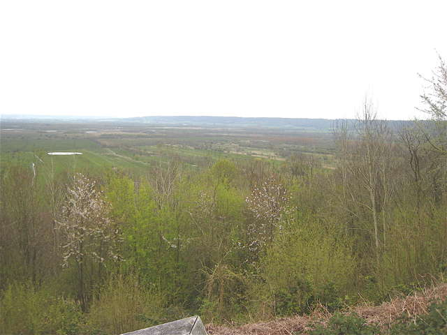
En route pour Trouville ! Un festival de Jean-François Lorente, qui date de 3 ans seulement, et qui se développe régulièrement ! En chemin, un petit arrêt pour voir le Marais Vernier, au sud de la Seine, en face du Havre.

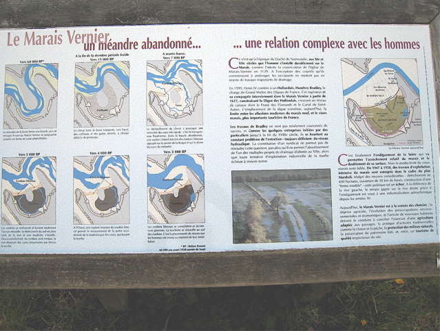
C'est un bras mort de la Seine, un ancien méandre qui a été recoupé et s'est transformé en tourbière puis en marécages qui ont été plus ou moins drainés. La photo ne le montre pas bien, mais le site est intéressant : un immense amphithéâtre cerné par les anciens coteaux de la Seine, et un fond rond, très plat et... humide !

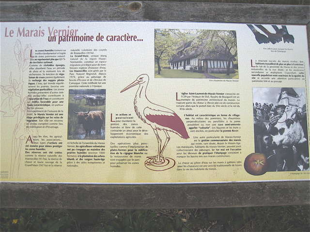
Un point de vue offre une table d'orientation, et des explications diverses sur l'origine, la faune et la flore. Mérite un détour...

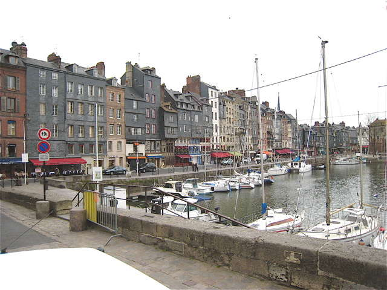
Je continue mon voyage par Honfleur et son pittoresque bassin entouré de maisons moyenâgeuses, puis je longerai la Côte de Grâce jusqu'à Trouville, sur la rive droite de la Dives (Deauville est en face, sur la rive gauche).

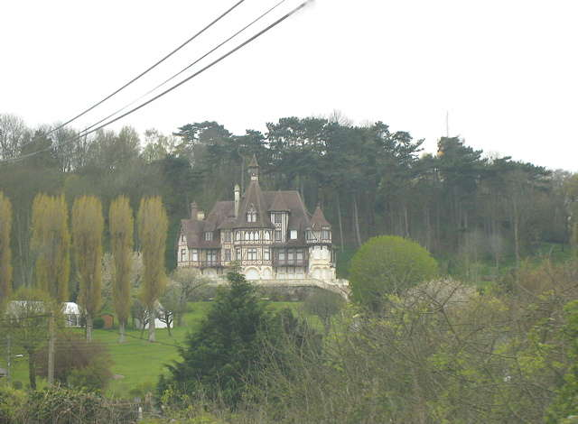
L'architecture est pseudo-anglo-normande, comme cette petite villa sur les hauteurs.

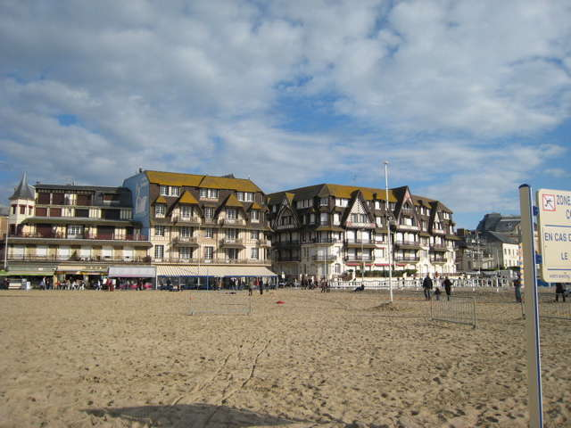
Enfin, me voici sur la plage, devant les grands hôtels balnéaires, qui prolongent le monumental Casino.

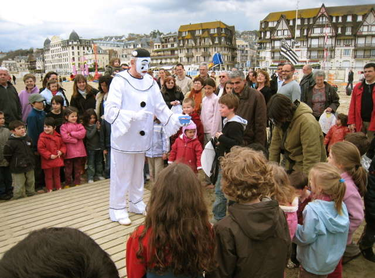
Samedi matin, Michel Chantren commence par un numéro de Pierrot-Robot pendant lequel il distribue des bonbons aux enfants, ça plaît beaucoup ! Les terrains sont désignés : "un pour les gonflables, un pour les présentations, et un petit pour les enfants qui achètent des cerfs-volants". Ben, et les vrais CVs, on les met où ? Ca n'intéresse guère JF qui se désole au micro que "le vent ne soit pas assez fort pour faire voler les cerfs-volants", alors que nous planons à 100 m depuis une heure !

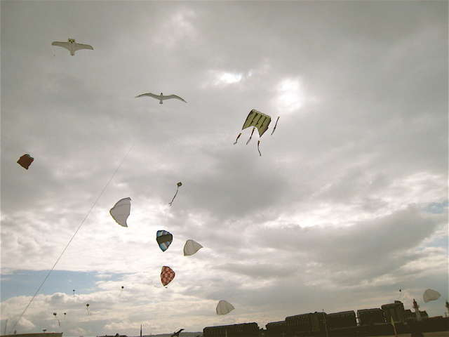
Le vent sera très bizarre ce week-end, tournant, changeant, souvent de terre et très turbulent à petite et grande échelle derrière les collines et les bâtiments... Pour le moment, il est un peu de mer, et il y a du monde en l'air !

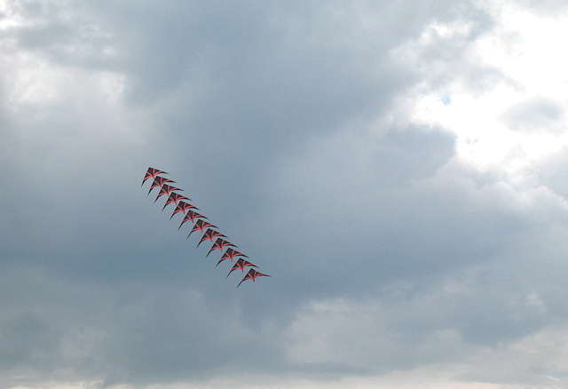
Renaud a monté son train, de 12 cerfs-volants le samedi, de 10 le dimanche. Il peut faire du bare-foot avec ! Mais il préfère s'éloigner un peu, il y a trop de public dans les surfaces pour cette arme dangereuse.

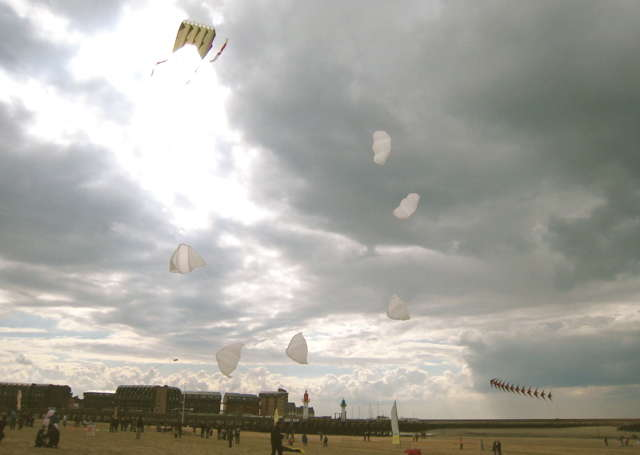
Les Pirates et les Gwenn Ha Du sont là, ils présentent leur ballet magique de voiles blanches, sous notre grand flow-form de Beauce. William (surtout) fait de l'initiation des enfants, mais sort aussi de la surface, c'est trop dangereux.

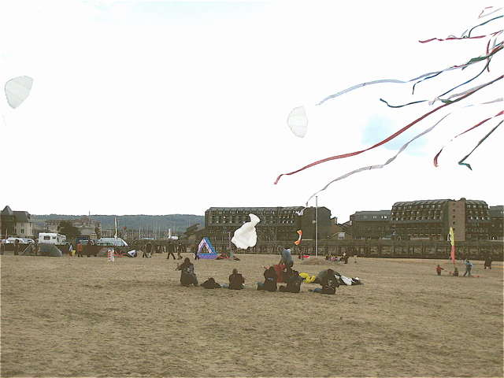
Le vent n'est pas trop fort, les balletistes pilotent assis, ça permet de bien caler les pieds... Au fond, le triangle impossible, à structure de roue, du team du même nom...

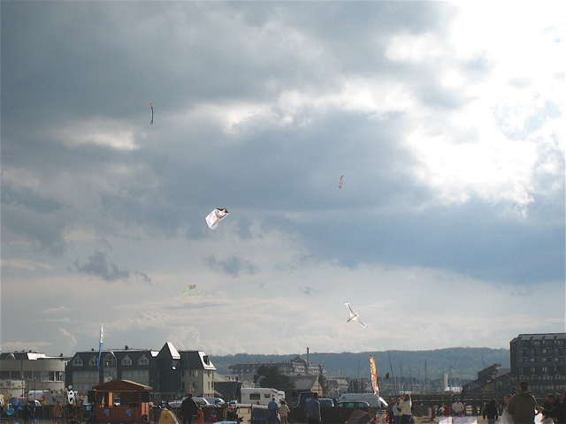
Michel Chantren et Astrid présentent leur ballerine dodue en robe blanche, en compagnie de chauves-souris noires ou blanches...

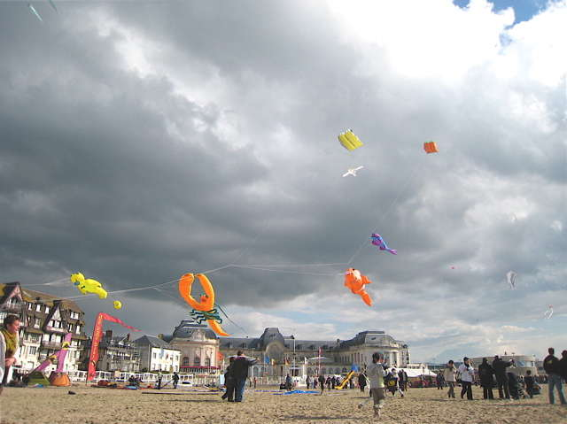
Après avoir, avec Annick, monté ses jardins, Patrick a sorti aussi une brochette de relativement petits gonflables...

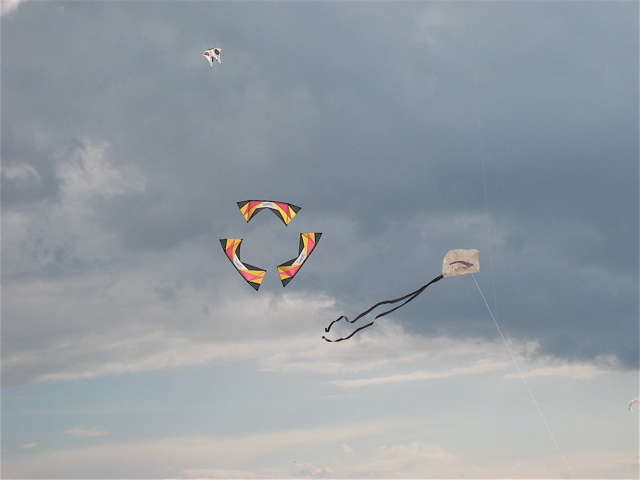
Damien, Fabrice et Ronan, les Crazy Drivers, montrent leur talent en Révos, avec cette boule parfaite !

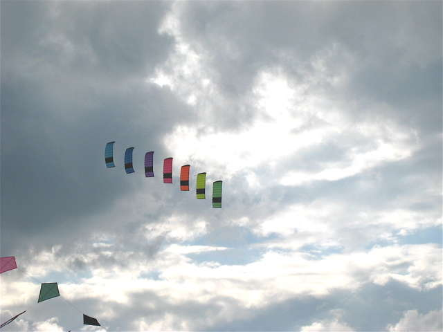
De temps en temps passe un grain comme celui-ci, avec éventuellement une petite averse de grêle, mais dans l'ensemble, on n'aura pas trop à se plaindre, ça ne dure pas longtemps...

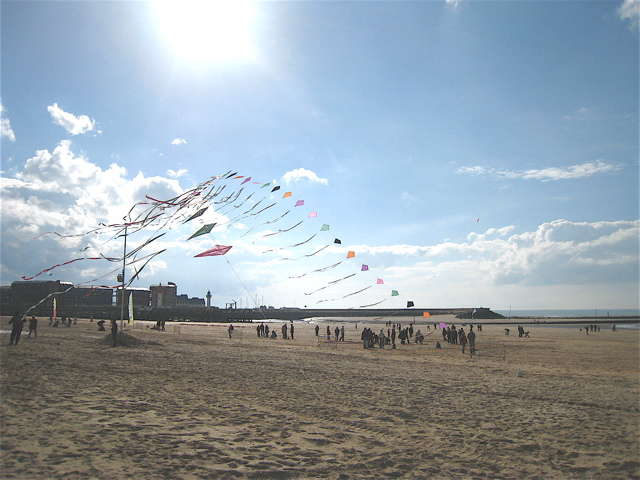
François Périault (le Prés. du CVCF) nous a monté, outre le flow-form, la bannière de l'Antenne de Beauce et cette arche aux longues queues qui se posera ou montera au gré du vent...

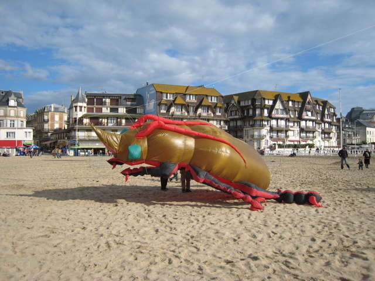
Les Sens Ciel présentent leur cafard qui se traîne un peu par terre pour le moment, mais qui finira par décoller...

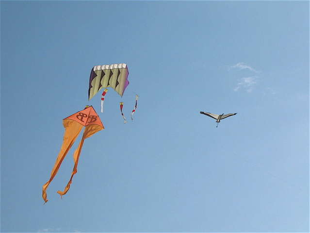
Le vent n'est pas trop fort, je fais voler ma grue pour tester sa stabilité. Ca va, après mes dernières modifs, ça s'agite dur dans les turbulences, mais elle se rattrape toujours, même le nez 3/4 bas...

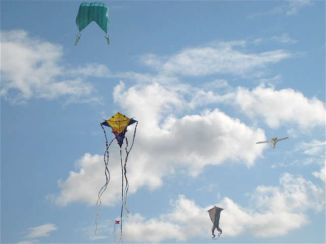
Michel Gressier est venu, avec ses splendides créations habituelles : Double Square, et ici, Grande Fibule !

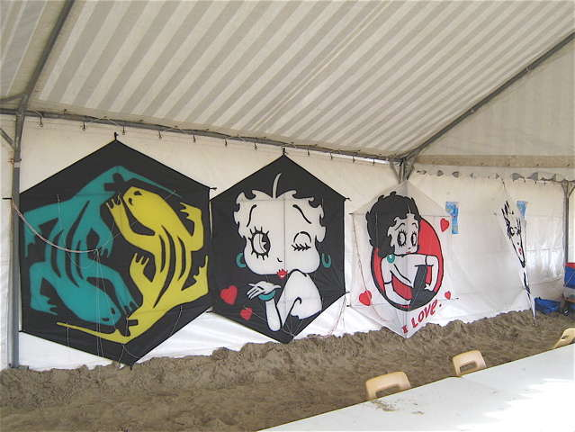
Les organisateurs ont préparé une brochette de Rokkakus, mais ils n'ont guère le temps de s'en occuper ! Faute de vent au bon moment, il n'y aura pas non plus de combat de Rokkakus...

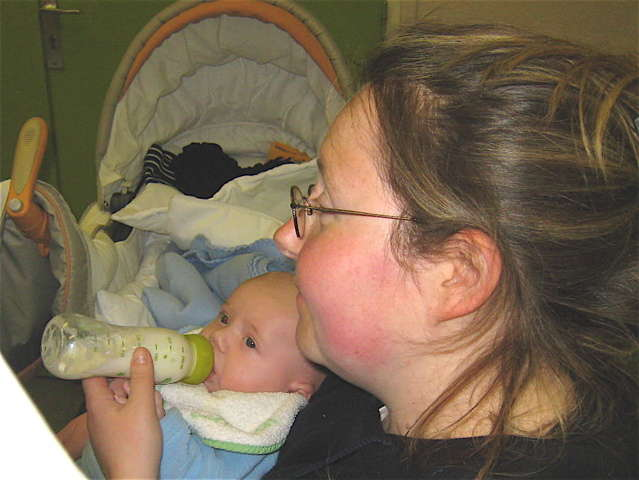
Le soir tombe, on rentre dîner. Didine nourrit aussi son bébé quasiment tout neuf !

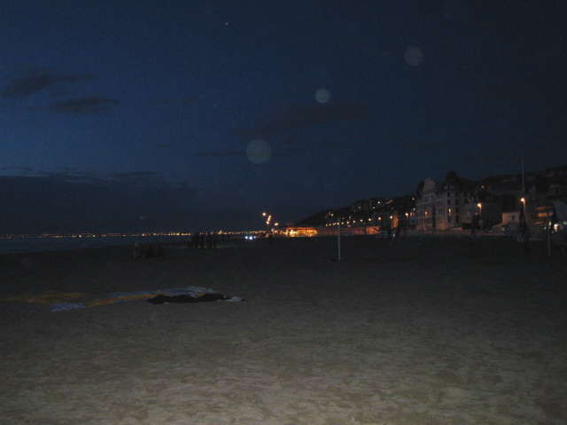
La nuit est tombée, le tour de la baie s'illumine, comme Le Havre au fond...

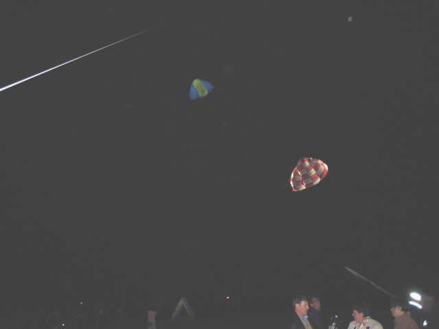
Il y a peu de vent au sol, nous sommes masqués par le Casino, avec ce vent de terre. Les Nasas s'en tirent bien et volent au ras des projos.

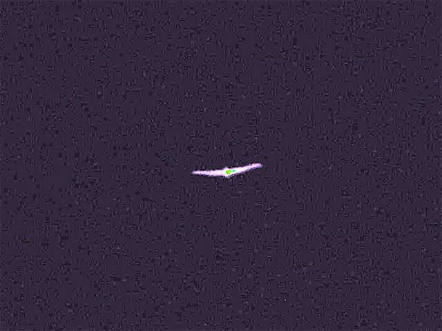
Michel Gressier et d'autres voleront après des envols laborieux. Avec mon Albatros, je rame pendant une heure pour des vols de 10 secondes ! Finalement, je m'éloigne pour me décaler du Casino, et je finis par monter. Je reviens sur le terrain, et là, JF annonce... Fin du vol de nuit, merci et bravo ! Je suis bien haut, la photo ne sera pas terrible...

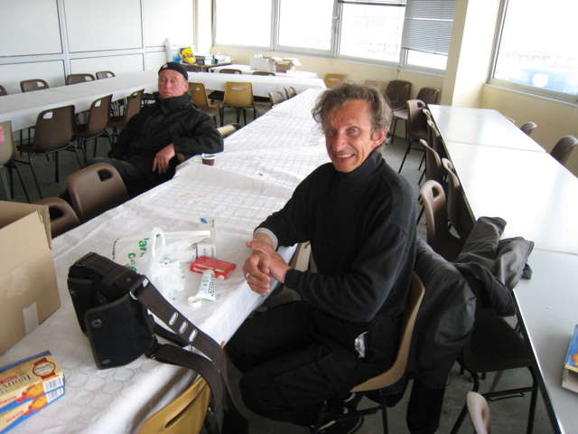
Dimanche matin, le jour se lève après une dure nuit. Fabrice a coincé ses skates dans une rainure du plancher et s'est bousillé le poignet. En plus sa tente a été volée pendant la nuit... Un visiteur a reculé plein pot dans la voiture de Martin qui a ripé d'un mètre et louche de la roue gauche...

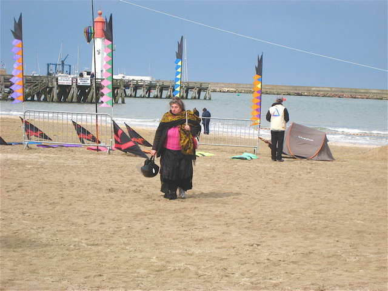
Je relance mon Albatros, plus facilement qu'hier soir. Une motarde (scooteriste, en fait) vient me tenir la jambe et ma bobine avec un enthousiasme juvénile et veut tout savoir du cerf-volant...

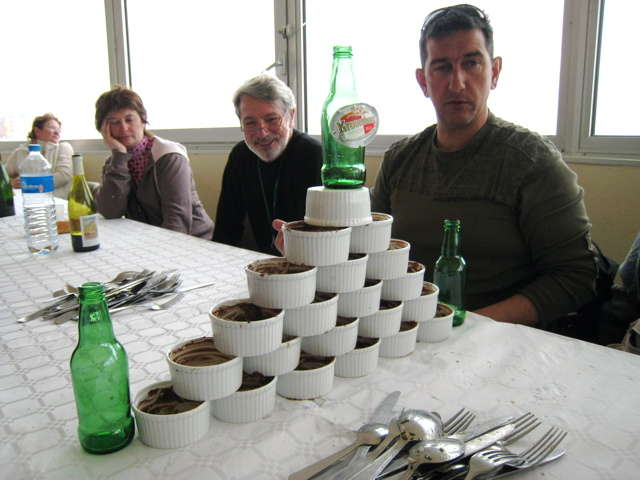
Déjeuner dans la salle circulaire qui domine la plage, vue splendide et bon repas !

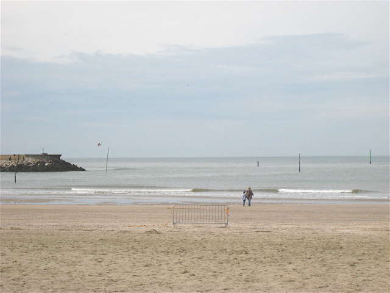
Bernard a fabriqué un superbe Roi des Airs qui vole très bien. Il déroule toute sa ligne et malheureusement le noeud se défait. Adieu, Roi des Airs. L'après-midi, je revois un point rouge au loin, je donne l'alerte, c'est un pêcheur qui l'a trouvé à marée basse et relancé. Bernard prend sa voiture, traverse la Dives et récupérera son bien, ouf...

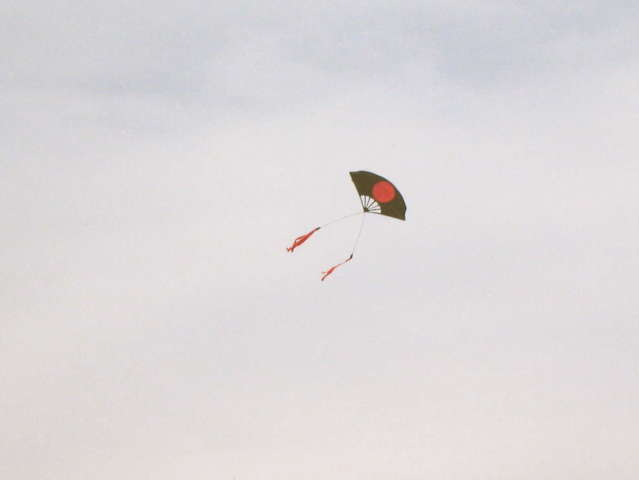
Jean-Claude Anquier (je crois) a réalisé ce joli cerf-volant éventail japonais ! Il a aussi bien sûr, comme les Darnis, les Guilbert/Deblois, Patricia et d'autres, monté ses JdVs.

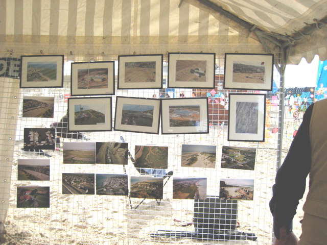
Sous le barnum, l'atelier enfant (gratuit), la boutique de Michel (combien de dièdres inversés j'ai retourné sur le terrain !) et une petite mais belle exposition d'aérophotos.

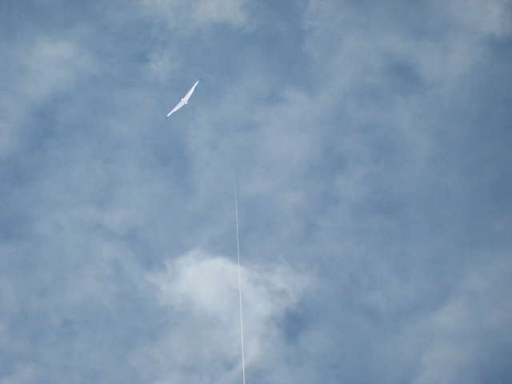
Dans les turbulences du vent de terre, je peux relancer mon Albatros, mais il vaut mieux garder la ligne en main, entre les thermiques, les tourbillons et les chutes vertigineuses !

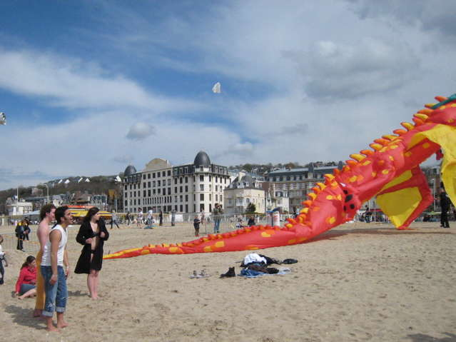
Mais finalement, le temps est assez beau, il y a même des baigneuses en maillot de bain léger...

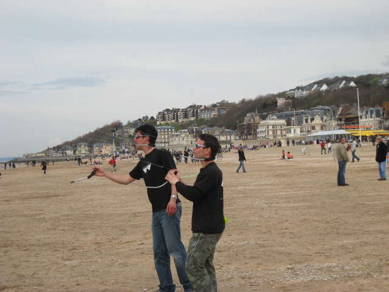
Fabrice est un peu mou maintenant pour le team Crazy Drivers en Révos. Damien et Ronan s'amusent à voler d'une main... et d'une tête !...

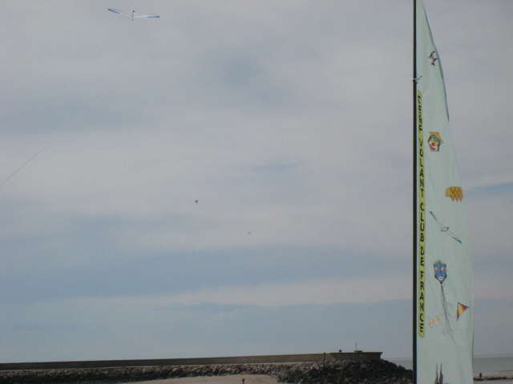
Dans les thermiques, le grand Wasseges de François et mon Albatros s'enroulent l'un autour de l'autre et s'en sortent en général.

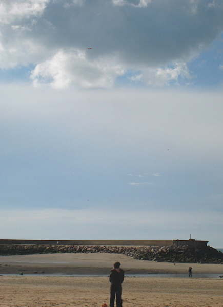
Mais dans une survente qui suit, je coupe la ligne du Wasseges, 2 fois plus grosse mais qui a un noeud ! Ce pauvre CV part vivre sa vie, mais il est très haut et ne tombera pas avant longtemps, d'autant qu'il reste horizontal et traîne une grande ligne... François ira tourner là-bas, de suite et demain matin à marée basse, mais sans succès... Aïe !

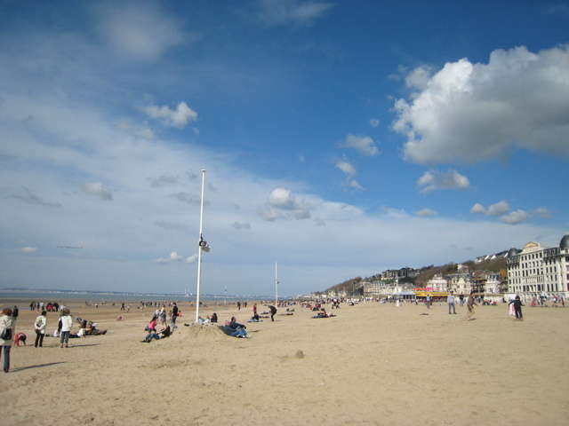
C'est triste, mais la plage est belle sous le soleil qui brille à flots... Le public est venu, plutôt nombreux pour le nombre de cerfs-volants en l'air...

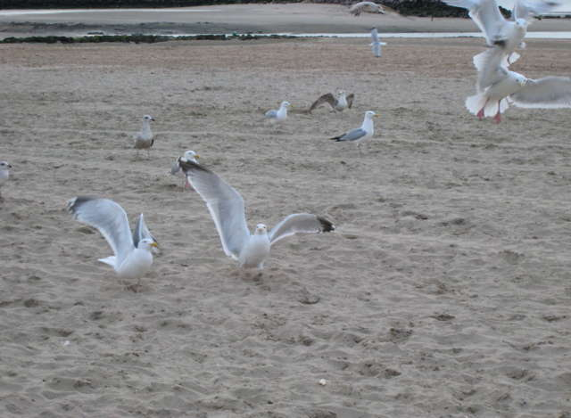
Au soir, dîner sur la plage pour ceux qui restent encore. Les goélands nous surveillent de près et approchent dès qu'on leur jette une bribe de nourriture !

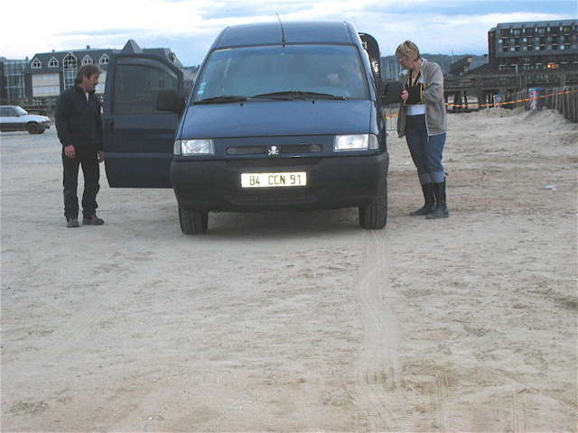
Yves part après dîner dans son train roulant bleu... marine ! A voir ses traces, on peut penser qu'il vaudrait mieux qu'il ne conduise pas, mais c'est juste un manque d'entraînement à la marche arrière avec remorque...
Trouville : Un festival qui monte, encore des imperfections (par exemple priorité aux gros gonflables... qui ne volent pas faute de leur vent !), mais l'accueil est super ! Dommage que la manip se tienne encore en même temps qu'Houlgate, j'espère que ça changera.
Annonce perso : J'ai gagné au combat de rokkaku de Chatelaillon une nuit d'hôtel + petit-déj. (2 étoiles) pour deux personnes pour le prochain festival, et je ne sais qu'en faire, j'aurais préféré une coupe ! Si cela vous intéresse, contactez-moi, elle ira à la meilleure ou la plus rapide des offres raisonnables ou pas.